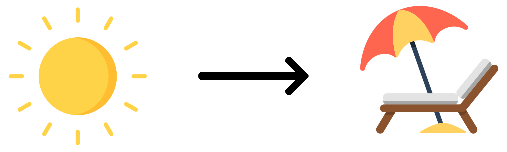

graph TD;
A(operation-1) --> B(operation-2);
A(operation-1) --> C(operation-3);
B(operation-2) --> C(operation-3);
C(operation-3) --> D(operation-4);
D(operation-4) --> E(operation-5);
C(operation-3) --> E(operation-5);
style A fill:#ffffff,stroke:#FF6F59,stroke-width:4px
style B fill:#ffffff,stroke:#FF6F59,stroke-width:4px,stroke-dasharray: 5 5
style C fill:#ffffff,stroke:#FF6F59,stroke-width:4px
style D fill:#ffffff,stroke:#FF6F59,stroke-width:4px,stroke-dasharray: 5 5
style E fill:#ffffff,stroke:#FF6F59,stroke-width:4px
Program flow
TipHow does our code know what order to do things in?
graph TD;
A(operation-1) --> B(operation-2);
B(operation-2) --> C(operation-3);
C(operation-3) --> D(operation-4);
D(operation-4) --> E(operation-5);
style A fill:#ffffff,stroke:#FF6F59,stroke-width:4px
style B fill:#ffffff,stroke:#FF6F59,stroke-width:4px
style C fill:#ffffff,stroke:#FF6F59,stroke-width:4px
style D fill:#ffffff,stroke:#FF6F59,stroke-width:4px
style E fill:#ffffff,stroke:#FF6F59,stroke-width:4px
graph TD;
A(operation-1) --> B(operation-2);
A(operation-1) --> C(operation-3);
B(operation-2) --> C(operation-3);
A(operation-1) --> E(operation-5);
C(operation-3) --> D(operation-4);
D(operation-4) --> E(operation-5);
D(operation-4) --> C(operation-3);
style A fill:#ffffff,stroke:#FF6F59,stroke-width:4px
style B fill:#ffffff,stroke:#FF6F59,stroke-width:4px,stroke-dasharray: 5 5
style C fill:#ffffff,stroke:#4088d4,stroke-width:4px,stroke-dasharray: 5 5
style D fill:#ffffff,stroke:#4088d4,stroke-width:4px,stroke-dasharray: 5 5
style E fill:#ffffff,stroke:#FF6F59,stroke-width:4px
Mechanisms to control program flow
In python, program flow can be altered in four main ways:
With conditional statements that act as a branching mechanism.
Using repetitive loops through the same block of code.
Using custom functions (subroutines) to jump to an entirely different spot, even in a different file or module, to do a task before (usually) jumping back again.
Through catching errors and executing different chunks of code accordingly.
To use these control mechanisms, we first need a way to tell python how our code is grouped together.
Indentation
Indentation, or leading whitespace, is extremely important in Python.
Where other languages use specific begin and end statements or curly braces {}, python uses indentation to identify which code is part of discrete blocks.
Statement_1:
Command_A # statement 1 block
Command_B # statement 1 block
Statement_2: # statement 1 block
Command_C # statement 2 block
Command_D # statement 2 block
Command_E # statement 1 block
Command_F # outside all the blocks
NoteThe style guide, PEP 8, recommends spaces instead of tabs for indentation.
Conditional control
The if statement
In the real world, we often evaluate information to choose a course of action:

If the sun is shining, then I’ll go to the beach.
In Python, the if statement is how we perform this sort of decision making.
The most basic if statement has the format:
if expr: # evaluated as a boolean
statement # valid python operation which is indentedSo, our beach example might look like:
if sun_shining:
go_beach = TrueBut what if we aren’t going to the beach - how do we decide what to do instead?
if sun_shining:
go_beach = True
else: # This will be the default option
go_shopping = True We can also offer an alternative using elif:
if sun_shining:
go_beach = True
elif snowing:
go_skiing = True
else: # This will be the default option
go_shopping = True We can even offer multiple alternatives using elif:
if sun_shining:
go_beach = True
elif snowing:
go_skiing = True
elif raining:
stay_home = True
else: # This will be the default option
go_shopping = True
Noteelse and elif blocks are optional, but if used must contain indented code
Source: RealPython
Operators
What about if we want to connect our decision to the temperature instead?
Python has a standard collection of comparison (or relational) operators:
# is less than
temperature = 11
print(temperature < 10)False# is greater than
temperate = 11
print(temperature > 10)TrueWe can even combine comparisons to check if the temperature is in a range:
temperature = 7
if temperature > 0 and temperature < 10:
print("Go to the beach! 🏖")
elif temperature < -10 or temperature > 40:
print("Stay home")Go to the beach! 🏖| Operator | Description | Example | Outcome |
|---|---|---|---|
< |
less than | 1 < 2 |
True |
> |
greater then | 1 > 2 |
False |
<= |
equal or less than | 2 <= 2 |
True |
>= |
equal or greater than | 1 >= 1 |
True |
== |
equality | 1 == 2 |
False |
!= |
non equality | 1 != 2 |
True |
is |
objects are identical | ||
is not |
objects not identical |
today = 500
tomorrow = 500
print(today == tomorrow) # True
print(today is tomorrow) # FalseTrue
FalseAll objects can be assigned a status of “truthfulness”; generally empty containers are considered to be False:
| False value | Description |
|---|---|
None |
numeric equality |
False |
False boolean |
0 |
0 integer |
0.0 |
0.0 floating point |
"" |
empty string |
() |
empty tuple |
[] |
empty list |
{} |
empty dictonary |
set() |
empty set |
All others evaluate to True.
In practice
CautionExercises
2.4 Conditional control
Repetitive operations
The for loop
In the real world, we often need to repeat an action:
Put five balls in the bucket
In Python, the for loop allows us to perform this type of iterative repetition.
A for loop executes commands in that block once for each value in a collection:
for item in collection:
# item takes on each value in the collection
statement # valid python operation that is indentedSo, to put each ball into the bucket:
toys = ['ball1', 'ball2', 'ball3', 'ball4', 'ball5']
for ball in toys:
bucket.append(ball)The bucket contains: ['ball1']
The bucket contains: ['ball1', 'ball2']
The bucket contains: ['ball1', 'ball2', 'ball3']
The bucket contains: ['ball1', 'ball2', 'ball3', 'ball4']
The bucket contains: ['ball1', 'ball2', 'ball3', 'ball4', 'ball5']
The same process works with any collection:
toys = {
'ball1': 'orange', 'ball2': 'purple',
'ball3': 'orange', 'ball4': 'purple',
'ball5': 'orange'}
for ball in toys.keys():
bucket.append(ball)What if we only want to collect the orange balls?
toys = {
'ball1': 'orange', 'ball2': 'purple',
'ball3': 'orange', 'ball4': 'purple',
'ball5': 'orange'}
for ball, colour in toys.items():
if colour == 'orange':
bucket.append(ball)
ImportantLoop variables can be called anything, but beware! Their state persists after the loop is finished.
Modifying flow
What if we want to avoid one specific colour?
Avoid the green balls
Along with if, the continue and break statements allow us to modify which parts of the block are applied to the item.
continue moves the internal counter directly to the next iteration without applying any code from lower in the block, and break stops the iteration immediately.
What if we want to avoid one specific colour?
Avoid the green balls
toys = [
'ball1-orange', 'ball2-pink', 'ball3-green',
'ball4-blue', 'ball5-purple']
bucket = []
for ball in toys:
if 'green' in ball:
continue
bucket.append(ball)
print(f'The bucket contains: {bucket}')The bucket contains: ['ball1-orange', 'ball2-pink', 'ball4-blue', 'ball5-purple']toys = [
'ball1-orange', 'ball2-pink', 'ball3-green',
'ball4-blue', 'ball5-purple']
bucket = []
for ball in toys:
if 'green' in ball:
break
bucket.append(ball)
print(f'The bucket contains: {bucket}')The bucket contains: ['ball1-orange', 'ball2-pink']
TipWhat is happening here?
toys = [
'ball1-orange', 'ball2-pink', 'ball3-green',
'ball4-blue', 'ball5-purple']
bucket = []
for ball in toys:
toys.remove(ball)
bucket.append(ball)
print(f'The toys are: {toys}')
print(f'The bucket contains: {bucket}')The toys are: ['ball2-pink', 'ball4-blue']
The bucket contains: ['ball1-orange', 'ball3-green', 'ball5-purple']
ImportantAn internal counter is used to keep track of which item is used next, and this is incremented on each iteration. If you modify the collection while iterating, you will get some interesting bugs!
Built-in iterators
The range() function allows you to iterate over a numeric sequence.
my_list = []
for x in range(8):
print("This round x is equal to:", x)
my_list.append(x*x)
my_listThis round x is equal to: 0
This round x is equal to: 1
This round x is equal to: 2
This round x is equal to: 3
This round x is equal to: 4
This round x is equal to: 5
This round x is equal to: 6
This round x is equal to: 7[0, 1, 4, 9, 16, 25, 36, 49]Given a collection, enumerate() generates a tuple containing each value and it’s index.
letters = ['A','C','G']
for index, letter in enumerate(letters):
print(index, letter)0 A
1 C
2 Gnumbered_letters = list(enumerate(letters))
print(numbered_letters)[(0, 'A'), (1, 'C'), (2, 'G')]In practice
CautionExercises
2.5 Repetitive operations